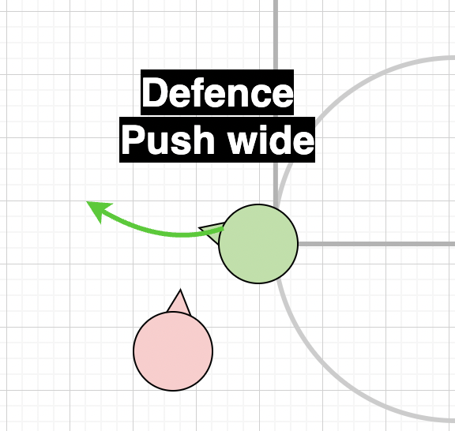
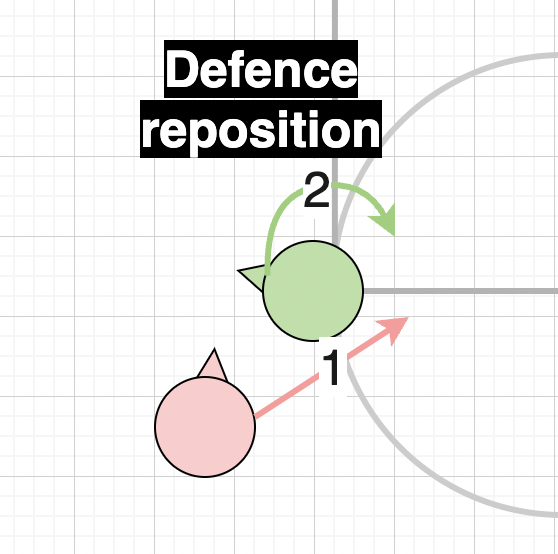
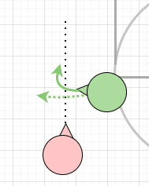

Defense 1-on-1
Where possible, pick a player with similar skill or points level. If defending faster/better player, try to switch with matching player within your team as soon as possible.
Positioning
Position inside of offencive player. Ie defender closer to basket than attacker.
Have your back to the Basket and point slightly away from attacker
While defending you are protecting the basket and pushing the attacker away from it. By committing to the inside of the attacker, you make clear that the only option is to move wide. You are unlikely to stop a moving player on the spot, so point chair towards a point where you are likely to intercept.

Re-Positioning
It is possible that the attacker fakes and moves towards the back of your chair. If this happens, turn towards the basket (or away from attacker) and reposition at lower point where you can intercept. If unable to defend or struggling, call for help to close the gap.
Always turn away/in to basket side than move chair backwards
If you turn towards the player, you are likely to end up behind the attacker.
Better to lose some distance than lose player completely.
Do call out what is happening so teammates are aware
Defending player with momentum
When defending a player coming with momentum, or a faster player, you have to allow more distance to defend. If you try to stop them in line, they will likely pass before you can block.

Prepare and position to defend further down than usual
Make it very clear that you are defending inside
Start moving slowly in anticipation.
Set a point to defend, often further down based on your speed and players speed and ability